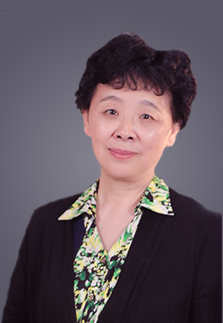

当前位置:
首页>
专家团队

甄岳来
甄岳来，北京信息科技大学教师。
孤独症家长，长期从事孤独症教育研究，多年以来，为全国的孤独症家长提供咨询服务，先后在北京、山东、广东等多个省市进行报告宣讲。
甄岳来的女儿1985年出生，作为中国第一代孤独症孩子的家长，甄岳来夫妇对女儿坚持进行了长达十多年的教育训练，用独特的社会性教育方法，实现了女儿基本康复的目标。这一教育成就受到教育工作者和广大家长的赞誉，长期以来成为鼓舞孤独症儿童家长的精神力量和学习榜样，甄岳来女士也因此在中国孤独症儿童家长中享有很高的声望。
十几年来，甄岳来女士坚持向家长们传授孤独症康复教育经验，为全国各地的家长提供康复训练咨询服务，自2006年起，她已经主办了8期“孤独症儿童社会性教育”家长，教师培训班，指导更多家庭走上了适合中国国情的孤独症康复教育道路。
孤独症家长，长期从事孤独症教育研究，多年以来，为全国的孤独症家长提供咨询服务，先后在北京、山东、广东等多个省市进行报告宣讲。
甄岳来的女儿1985年出生，作为中国第一代孤独症孩子的家长，甄岳来夫妇对女儿坚持进行了长达十多年的教育训练，用独特的社会性教育方法，实现了女儿基本康复的目标。这一教育成就受到教育工作者和广大家长的赞誉，长期以来成为鼓舞孤独症儿童家长的精神力量和学习榜样，甄岳来女士也因此在中国孤独症儿童家长中享有很高的声望。
十几年来，甄岳来女士坚持向家长们传授孤独症康复教育经验，为全国各地的家长提供康复训练咨询服务，自2006年起，她已经主办了8期“孤独症儿童社会性教育”家长，教师培训班，指导更多家庭走上了适合中国国情的孤独症康复教育道路。